01Context
From a wallet to a whole financial life.
COVID-19 pushed Vietnamese consumers toward online payments. PayME launched an e-wallet to ride that shift. Then the company set a bigger goal: become an all-in-one financial app for both personal and business needs.
The business goal was clear. Integrate every financial service into one app, with an interface simple enough for every customer segment. The open question was whether users wanted that, and what would stop them.
02My role
Lead, mentor, and the link between business and design.
I led a multidisciplinary design team of 6, including UI/UX designers and a UX writer. My job covered four areas.
Direction
Product roadmap
Turned research into priorities, and priorities into a roadmap the team could follow.
Alignment
Stakeholder requirements
Gathered requirements from business, partners and engineering, and translated them into design scope.
Quality
Output and documentation
Set the design workflow, reviewed output quality, and kept documentation current for engineering.
People
Team management
Mentored junior designers and ran the team’s day-to-day delivery.
03Research
Ten interviews, one loud signal: trust.
We interviewed 10 active users aged 18 to 35 who had made a transaction in the last three months. Each session ran 45 to 60 minutes. We asked about their need for financial services like investing and lending, and their pain points with the current app.
The answers were blunt. Here is how many of the 10 said each thing.
We also collected user stories to hear the need in their own words.
- “I’m a taxi driver with a low income. I want to get paid in advance every mid-month to cover my family’s living expenses.”
- “I want to borrow less than 10 million VND to open a small business, but the bank’s procedures are complicated.”
- “I want to invest safely with a small amount, 50,000 to 100,000 VND, to learn how investing works.”
A competitor review completed the picture. The market leaders had scale, partners and incentives, but their apps buried services and confused users. Investment apps won trust with audits and big-name backers. The opening was clear: simple to use, and visibly trustworthy.
04Define
Two people, two money problems.
Persona A18 to 50
People who need money
Income of 5 to 10 million VND a month. Needs are higher than income. Want fast disbursement, a trusted sponsor, clear information and a simple interface. Like vouchers. Fear losing money.
Persona B18 to 35
People with money
Income of 10 to 40 million VND a month. Care about customer service and complete information. Prefer safe investments. Fear being cheated.
We mapped one journey for the whole app, from awareness to loyalty, then a detailed journey per feature. Four problems rose to the top.
- Brand trust. Users didn’t know PayME well enough to trust it with money.
- Onboarding friction. eKYC and bank linking were hard for new users.
- Nothing to explore. The app had no standout features beyond payment.
- Low financial habit. Few users invested or saved, and educating the market takes time.
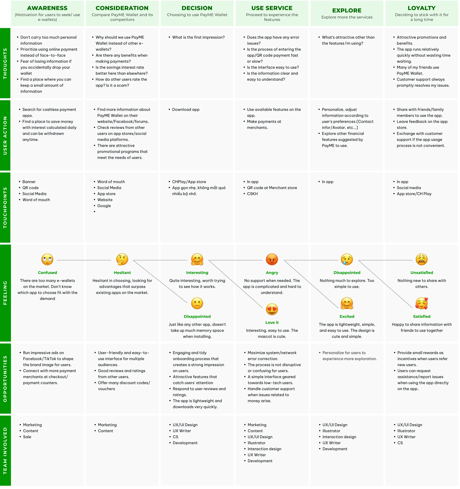
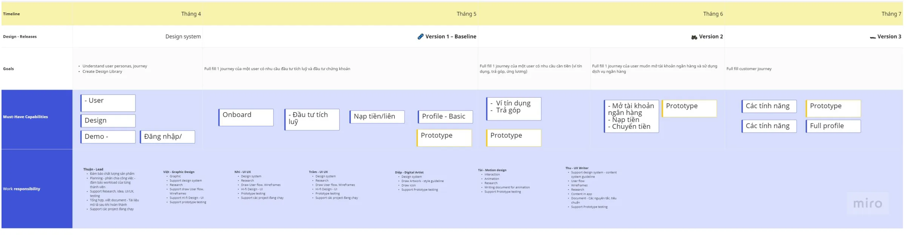
05Ideate
Ideas for the product, and a face for the brand.
Trust isn’t only built in flows. We ran product ideation on whiteboards, and in parallel explored a mascot with Marketing to give the brand warmth and make it easier to remember.
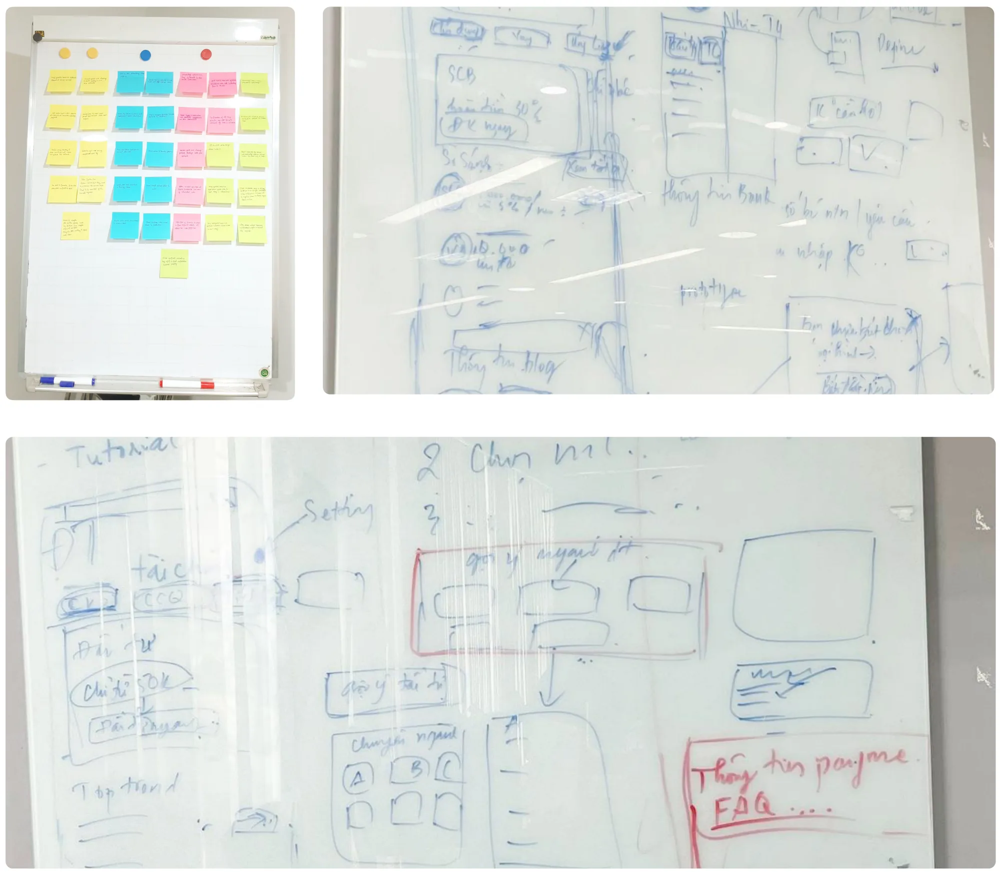
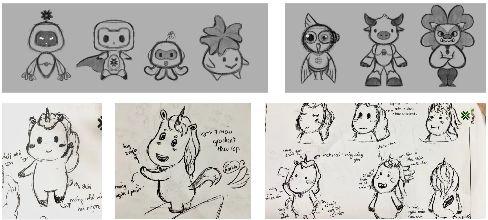
06Design
One structure for many services.
With many services entering one app, information architecture was the first design decision, not the last. I restructured the app so finance services had a clear home next to the wallet.
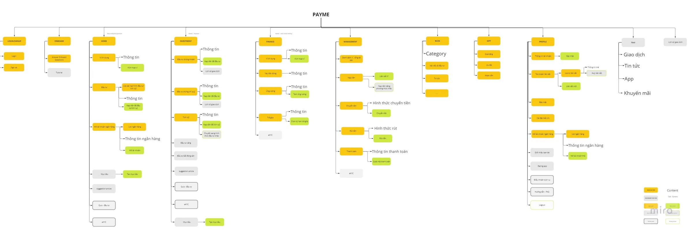
Salary advance, with three actors
Salary advance answered the clearest need from research: 7 in 10 people ran out of money by mid-month. It was also the most complex flow, because three parties were involved. The user requests, PayME checks, and CIMB bank approves and disburses. I mapped it as a swimlane so business, bank and engineering could agree on every handoff.
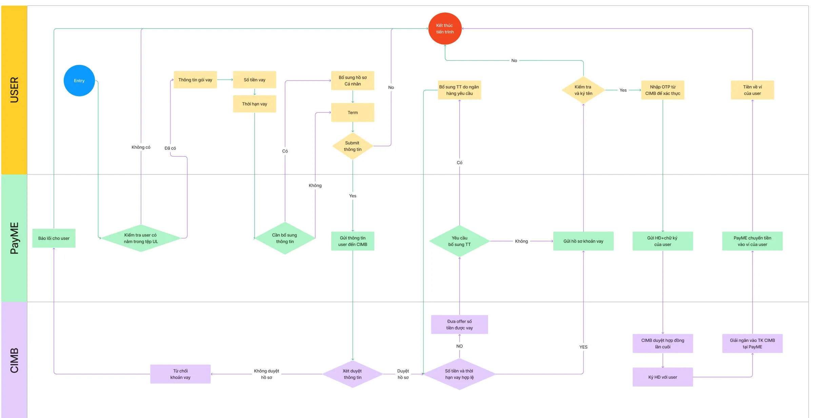
A design system to move fast
To save implementation time, we built the design system from existing app layouts, then refreshed it with new type and a younger color palette. The system followed the roadmap, so each release added the components it needed.
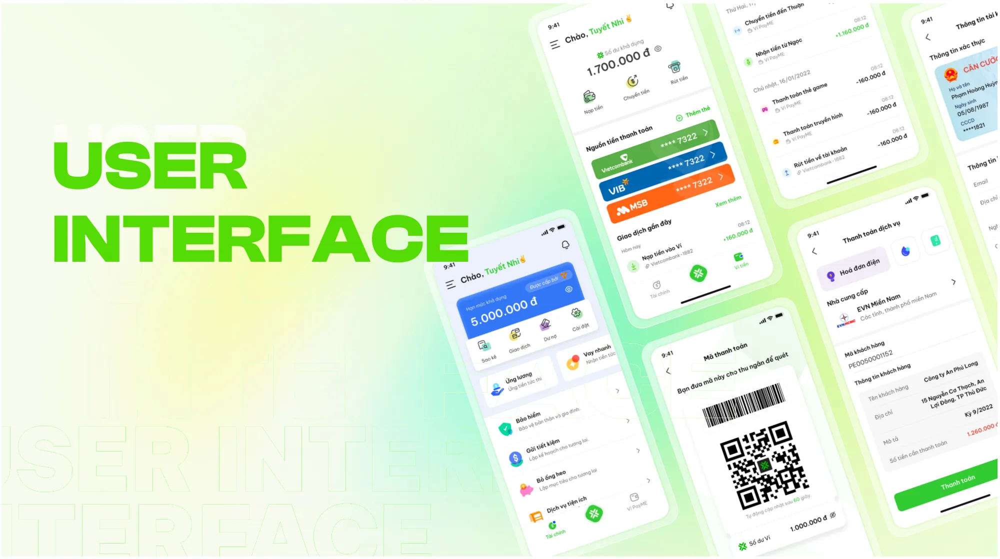
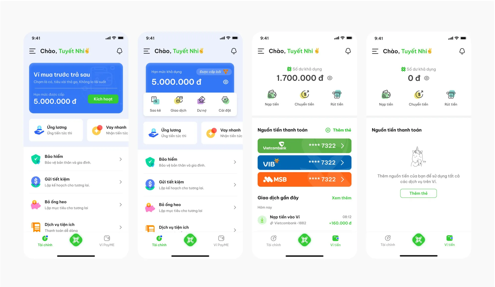
07Test
Five users found three problems we couldn’t see.
Before each release we built a task list and ran usability tests. For salary advance, we recruited 5 participants aged 18 to 35 with low incomes, who needed an advance or a loan for living costs and had never used PayME. Each session ran 45 to 60 minutes.
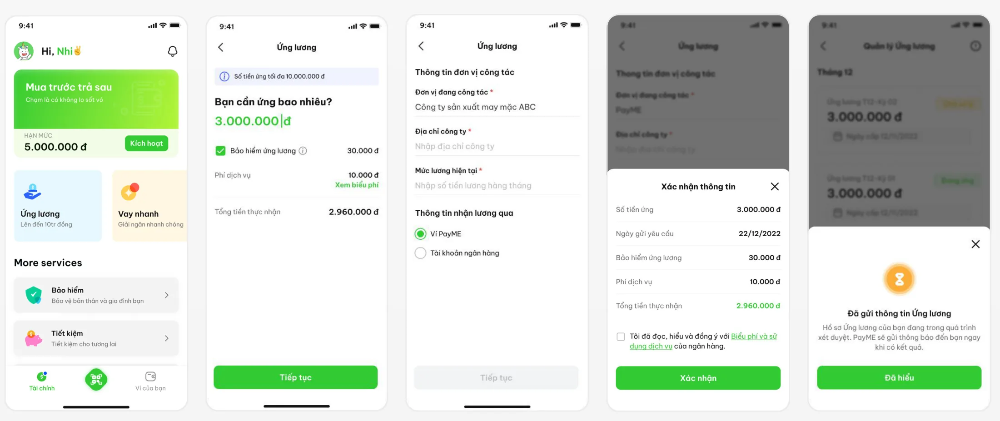
Finding 1
Even with a free amount field, users didn’t know how much was enough to ask for.
Solution
Suggest preset advance amounts, so users can compare options instead of guessing.
Finding 2
Users wanted to see the fee right away. An extra step to view fees made comparing amounts slow.
Solution
Show the fee on the same screen as the amount, and update it live as the amount changes.
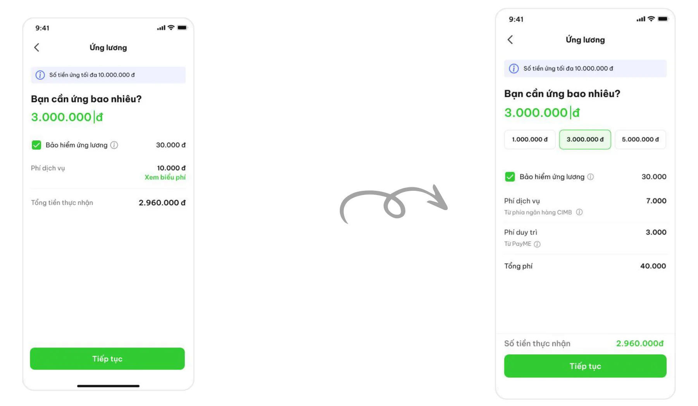
Finding 3
After tapping the entry point, users wanted to see their past advances.
Solution
We weighed two options: show the latest advance on the entry screen, or add a separate management screen. We chose the separate screen, so each screen does one job.
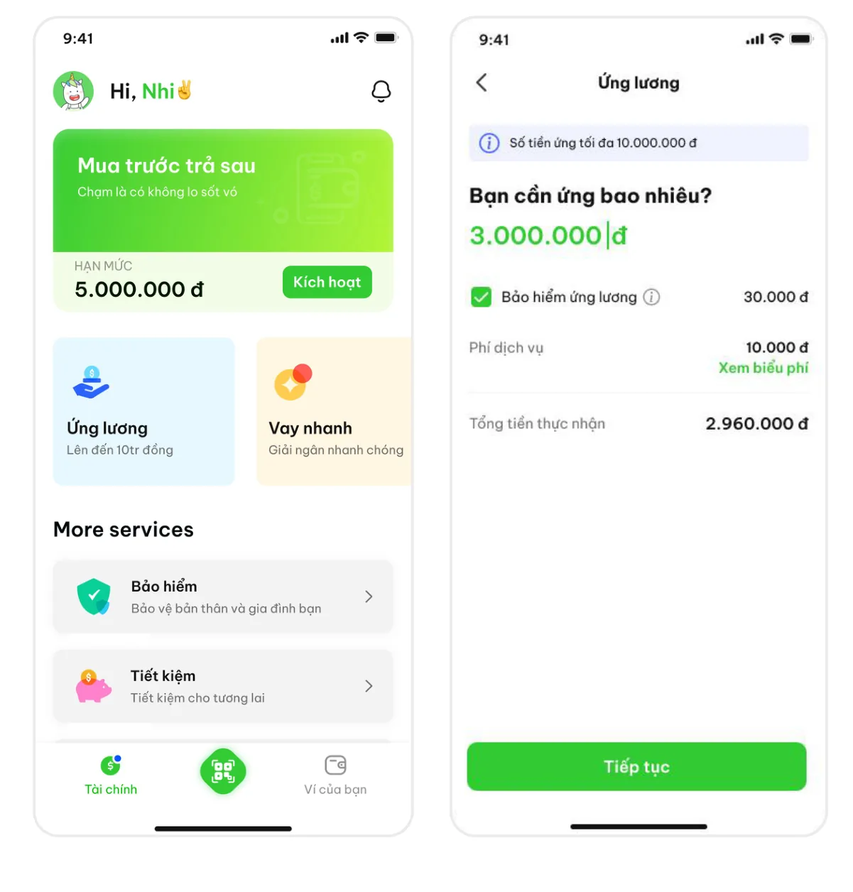
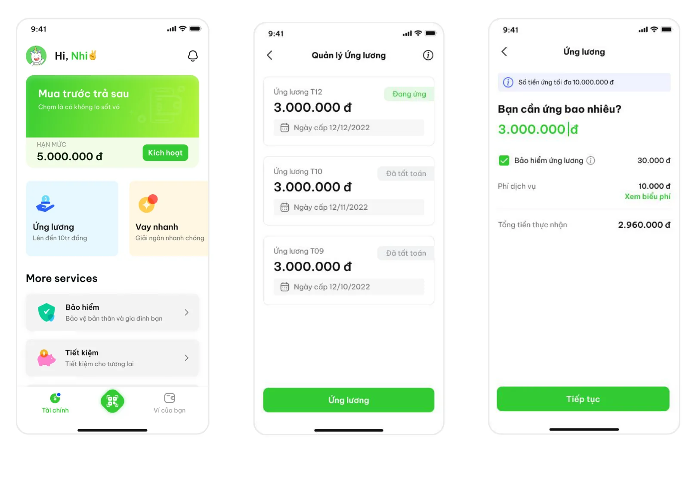
Showing the fee next to the amount helped users and the business at once. Users could borrow with confidence, and clear pricing is how a new brand earns trust.
08Reflection
The hardest part wasn’t the screens.
We measured on production, but the release took longer than planned. Engineering had to change parts of the implementation. Agreeing on business processes and rules with partner banks took time too.
What I took away as a lead:
- Bring partners in early. In fintech, the bank’s rules shape the flow. A swimlane reviewed with the bank on day one saves weeks later.
- Design for trust, not just ease. For money, clarity about fees and status beats a shorter flow.
- Systems pay off. A roadmap-aligned design system let a team of 6 ship a new wallet, a POS product and loan flows in one year.